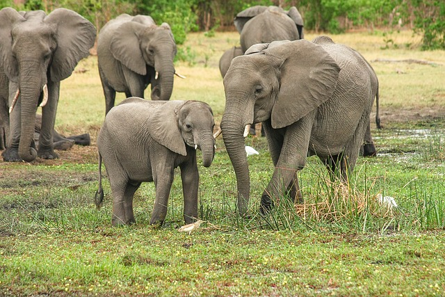
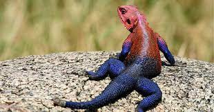
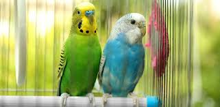

| HAYVANLAR ALEMİ | ||
|---|---|---|
|
Hayvanlar alemi, dünya üzerindeki çeşitliliğiyle büyüleyici bir bütündür. Milyonlarca türü içine alan bu alem, her biri kendi özel özellikleriyle donatılmış canlıları barındırır. Bu canlılar, her türlü ortamda varlık gösterirler; kutuplardan çöllere, |
||
| Grup | Açıklama | Görsel |
| Memeliler | Memeliler, omurgalı hayvanlar arasında en çeşitli gruplardan biridir. Yeryüzündeki birçok farklı ortamda yaşarlar ve genellikle yavrularını doğururlar. Örnek olarak köpekler ve kediler verilebilir. |  |
| Sürüngenler | Sürüngenler soğukkanlı hayvanlardır ve genellikle pullarla kaplıdırlar. Çoğu sürüngen kara hayvanı olsa da bazıları denizlerde veya suda yaşar. Timsahlar, yılanlar ve kertenkeleler sürüngen örnekleridir. |  |
| Kuşlar | Kuşlar, tüylü vücutları ve uçma yetenekleriyle tanınan omurgalı hayvanlardır. Dünyanın dört bir yanında bulunan çeşitli türleri vardır. Örnek olarak kartallar, serçeler ve penguenler verilebilir. |  |